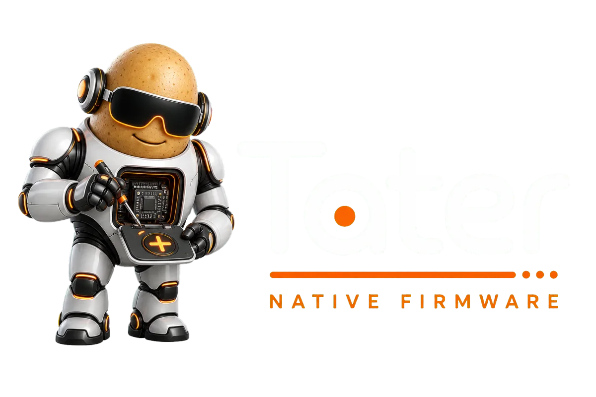
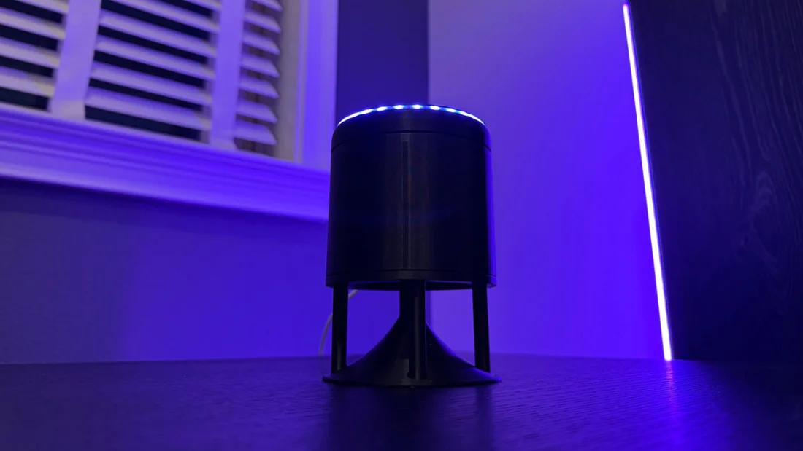
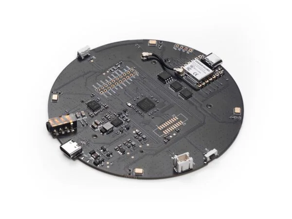
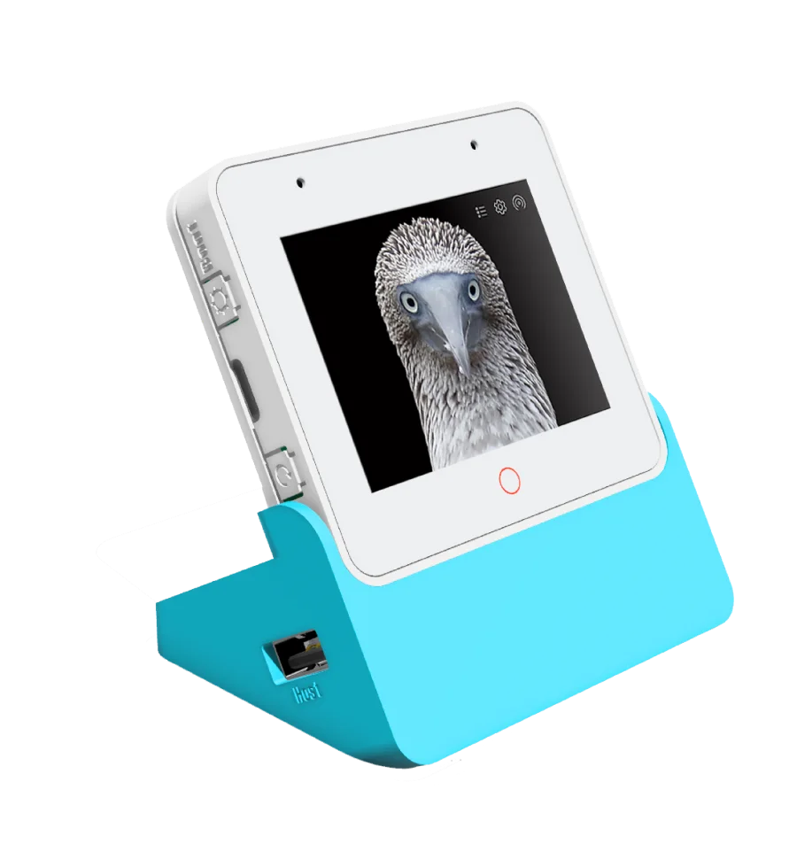

Support is tied to the exact boards and generations below. Similar-looking hardware may use different chips, flash layouts, or recovery paths.
Tater Native
Small devices. Right at home.
Install Tater's firmware on one of these supported boards, then manage its voice, room, and updates from Tater.

voicepe
Home Assistant Voice Preview Edition
Compact voice hardware with an XMOS audio front end, dual microphones, an LED ring, a volume dial, and a physical microphone-mute switch.
16 MBHardware AEC3.5 mm output

satellite1
Satellite1 / Sat1
Supported from Public Batch #1 Beta.1/rev4.1 onward, with a four-microphone XMOS front end, 24-pixel ring, volume controls, and internal or AUX output.
16 MB4 microphonesAUX + internal

respeaker_xvf3800
ReSpeaker XVF3800
A four-microphone XMOS platform with direction-of-arrival telemetry, hardware mute, a 12-pixel ring, and a dedicated 8 MB Tater firmware layout.
8 MB4 microphonesXMOS DoA

s3_box
ESP32-S3-BOX-3 Display
A 320 × 240 display satellite for voice, clock and status cards, timers, volume and mute state, OTA progress, and Tater-provided display feeds.
The A113X/S420 model brings Tater voice and music to another familiar form. Pair it with a room and manage it from Tater.
First install: the ThirdReality debug board is required for factory flashing or recovery. Routine updates preserve pairing and settings over OTA; browser USB flashing is not supported for this model.
Hardware names and product imagery belong to their respective owners and are shown only to identify compatibility. Sources: Home Assistant, FutureProofHomes, Seeed Studio, Espressif, and the official Tater firmware repositories.